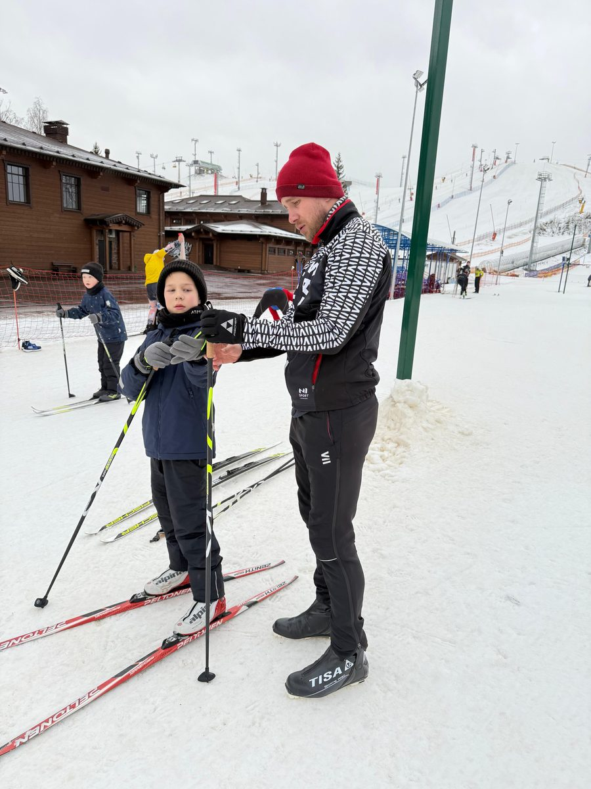
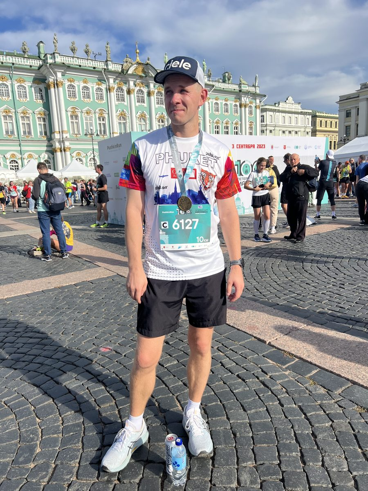

Михаил
Фронтенд-разработчик. Хочу помочь вашей команде с сайтом.
О себе
- 38 лет
- Санкт-Петербург, Мпр. Ветеранов
- Женат, двое детей
- Высшее образование
Около 12 лет занимаюсь веб-разработкой. Основная специализация — фронтенд для крупных трейдинговых платформ: сложные интерфейсы, где важны скорость, надёжность и внимание к деталям.
Сейчас работаю удалённо на полной ставке и готов выделять вашему проекту около 4 часов в день в гибком графике.
Почему пишу вам
Давно на вас подписан — по вашим урокам на YouTube учился коньковому ходу. Был на открытии магазина: ленточку тогда перерезали мои дети.
Я не такой серьёзный спортсмен, как ребята из вашей команды, но десятку бегаю, а в сезон стараюсь выбираться на лыжи. Мне нравится ваша спортивная тусовка и то, что вы делаете, поэтому, увидев вакансию, решил предложить помощь с сайтом.


Понимаю, что закрываю не все пункты из описания. Но техническую часть могу и хочу взять на себя.
По требованиям вакансии
- HTML и веб-технологииСильная сторона. Это моя основная работа последние 12 лет.
- Работа с ИИСильная сторона. Пользуюсь каждый день: Claude Code и Codex — мои основные инструменты для написания кода. Есть личные платные аккаунты.
- WildberriesЕсть опыт. Сам был селлером — до недавнего времени продавал товары из Китая, так что знаю маркетплейс изнутри.
- 1С и InSalesРазберусь. Напрямую не работал, но уверен, что быстро разберусь — с ИИ-инструментами освоить новую платформу сейчас заметно проще.
- SEOРазберусь. Отдельно этим не занимался, но тема мне интересна, и я с удовольствием в ней прокачаюсь.
- Фото и видеоСлабое место. Снимаю на базовом уровне, а монтаж и обработка — точно не моя сильная сторона. Говорю об этом честно сразу.
Ещё коротко
Контакты
- Телеграм@soulfu1
- Instagram@soulfu1
- Телефон+7 911 029-80-22
- Почтаmihailsmolin@gmail.com